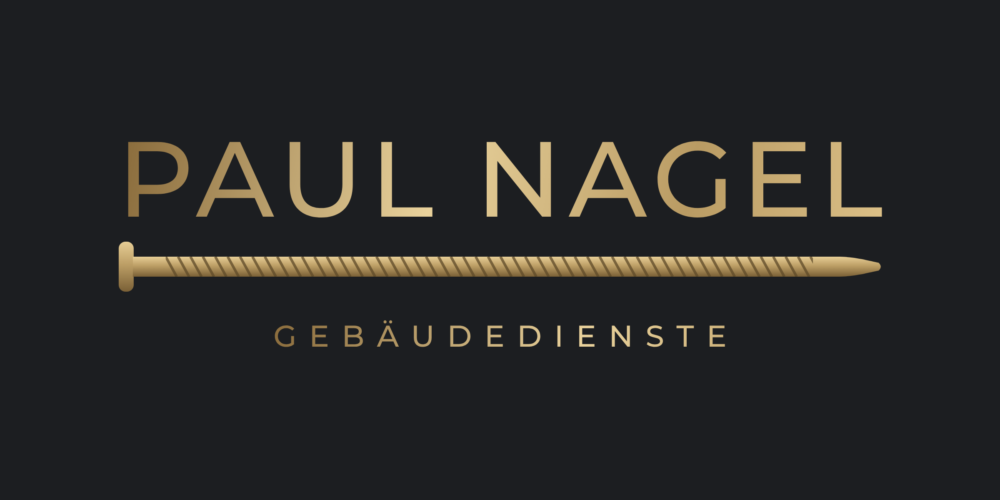
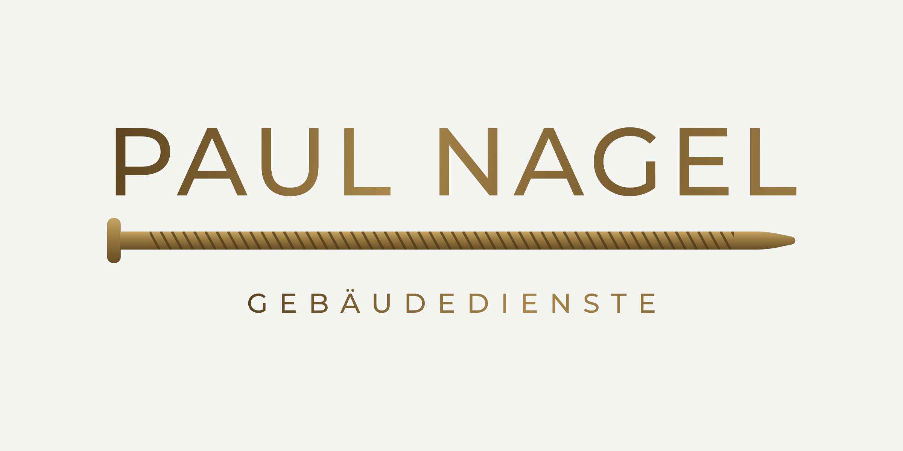
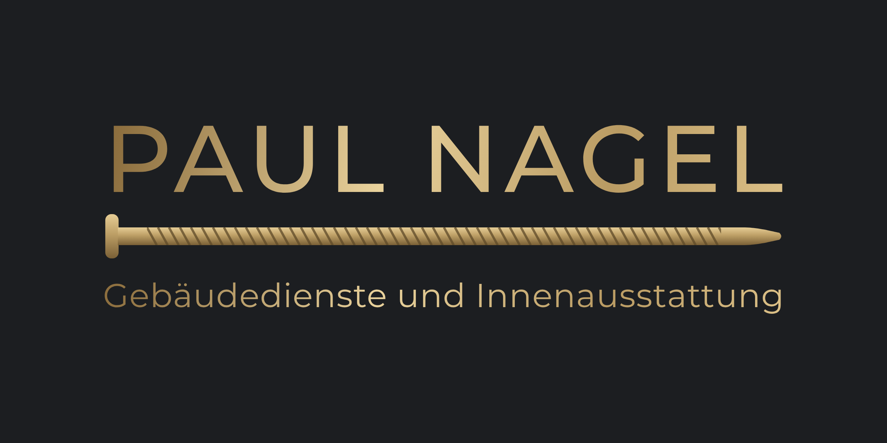
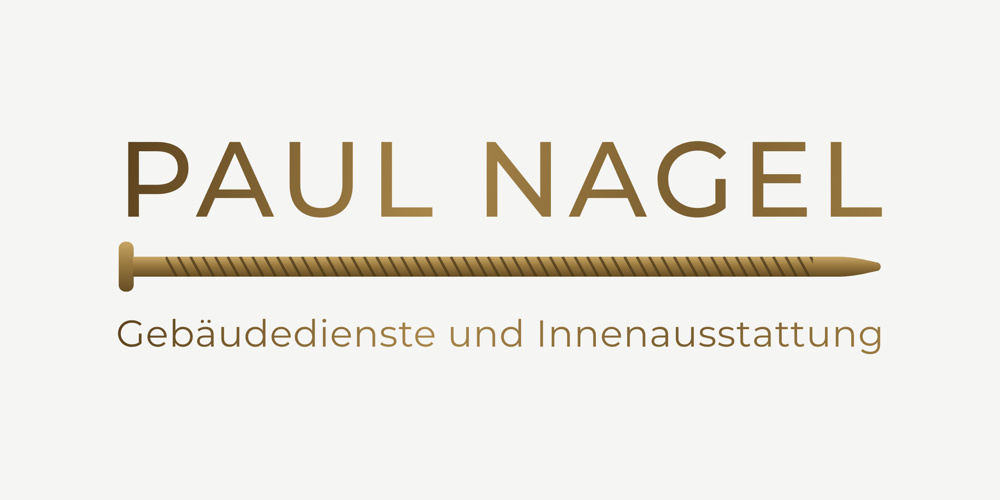
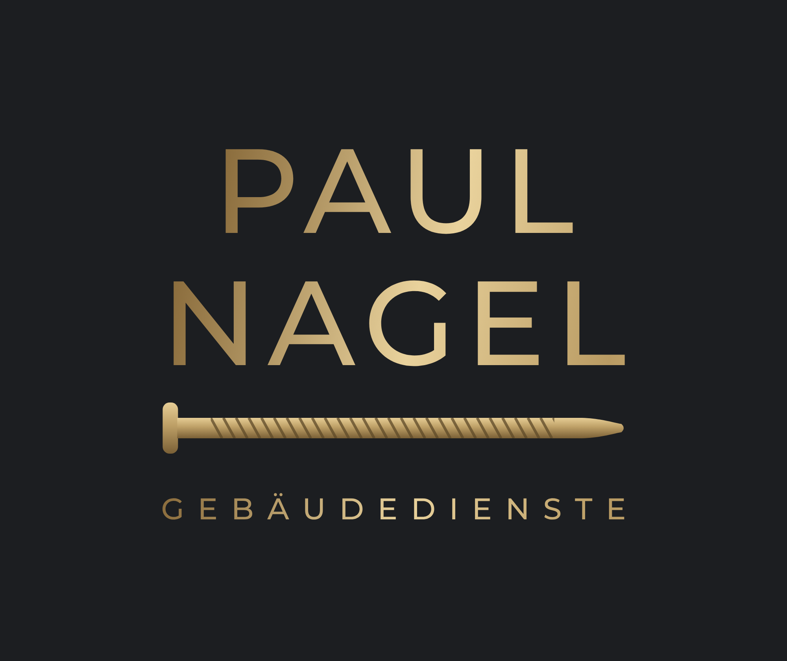
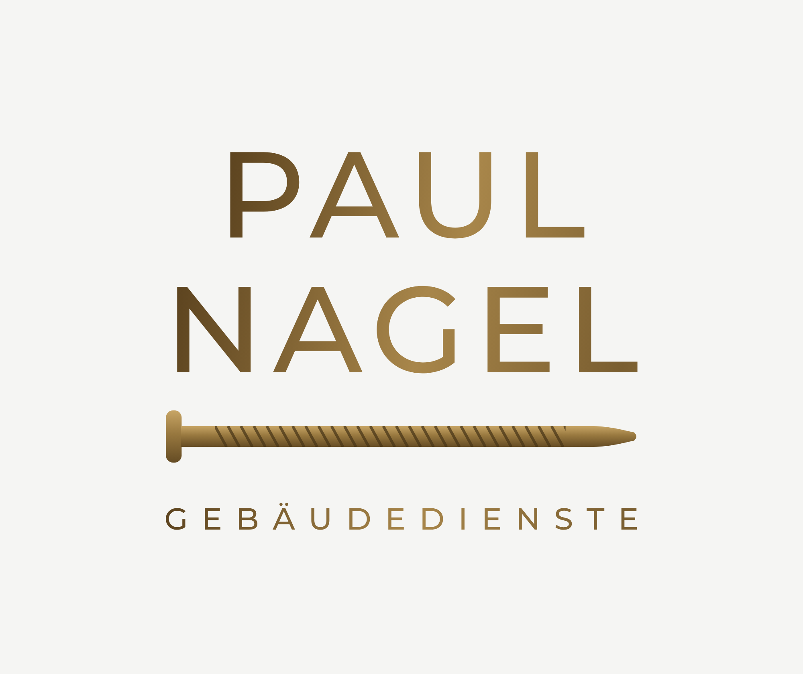
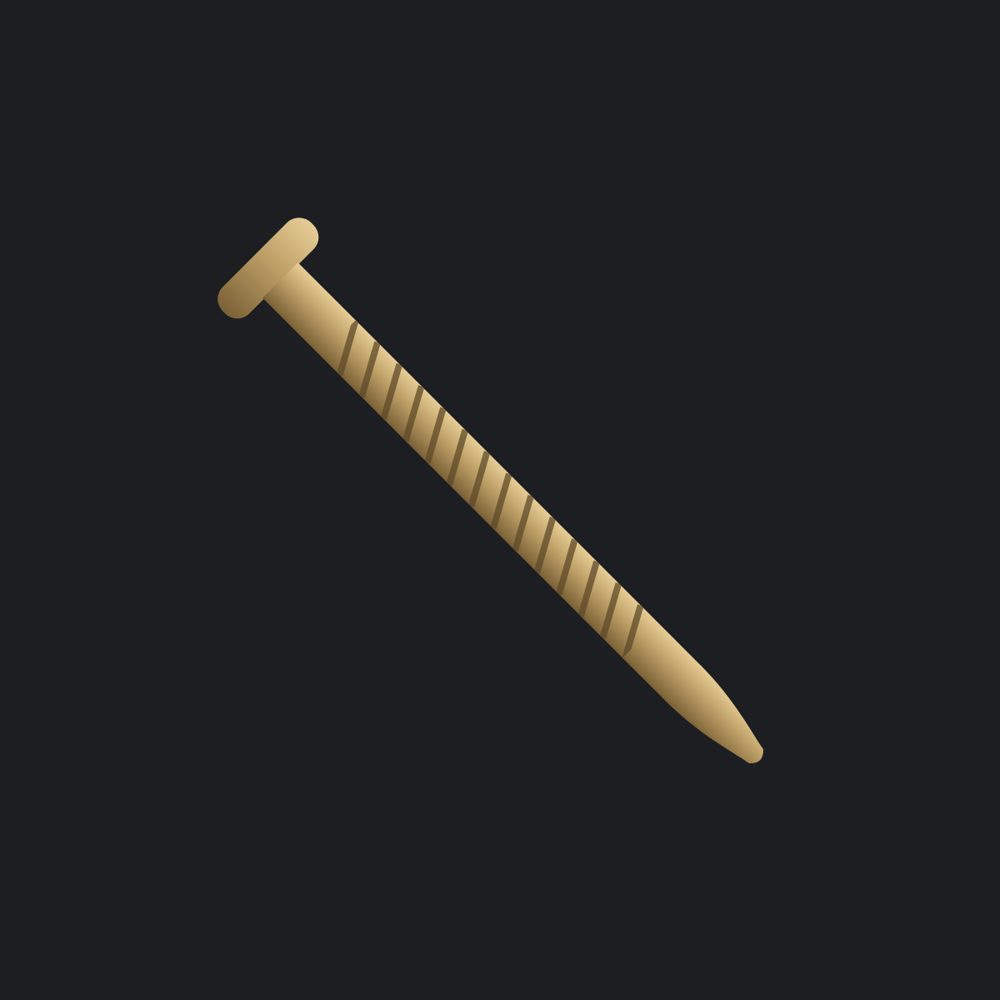
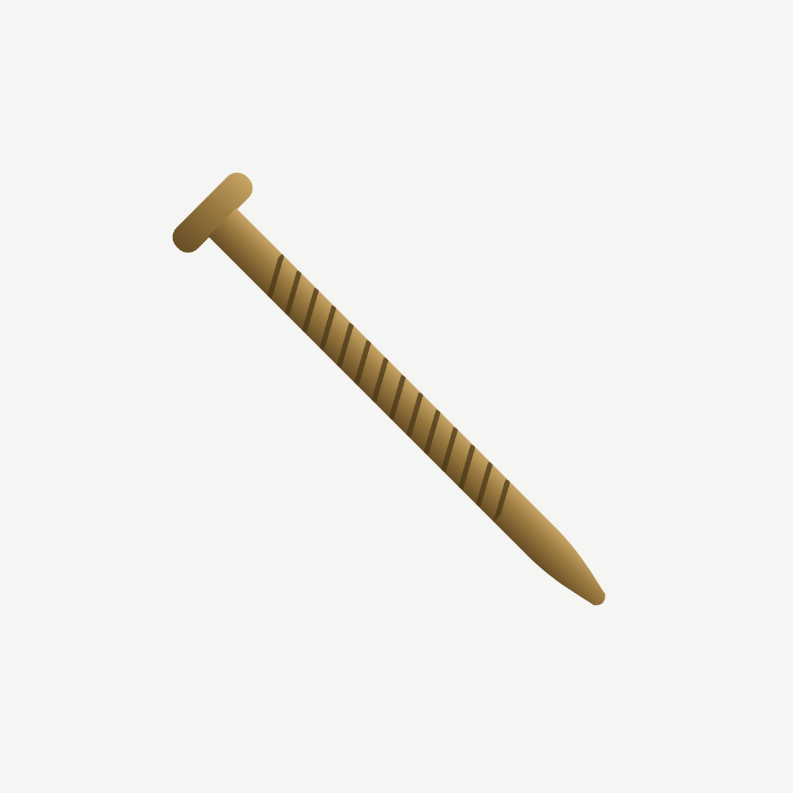

Wie im ersten Entwurf mit Goldverlauf, aber mit stumpfer Nagelspitze. Links dunkel (Renovierung), rechts hell (Reinigung).


Slogan kurz.


Slogan lang.




Gestapelt und Zeichen. Einfarbige Fassungen für Stick und Folie liegen im Paket.